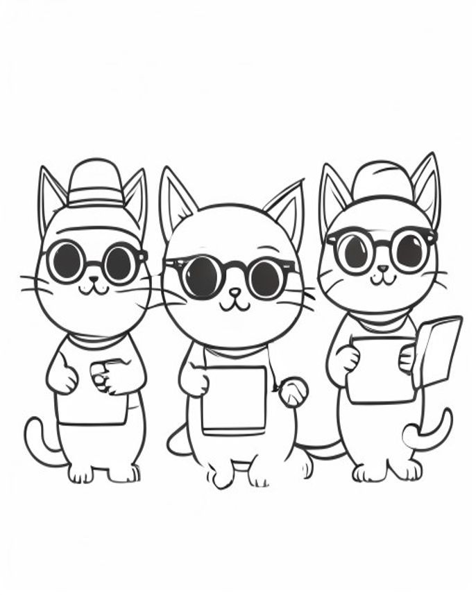
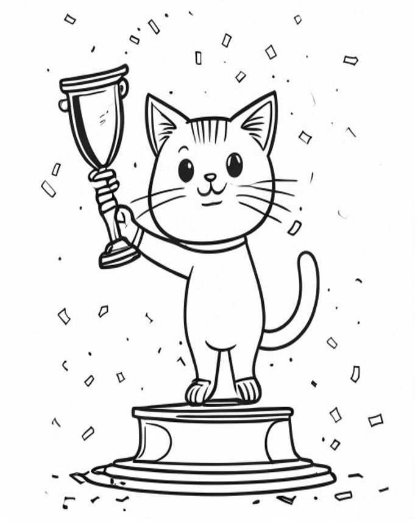

Myno의 블로그
Myno의 블로그 미노
미노"요즘 터미널에서 AI 코딩 에이전트 쓰는 사람 많다며?" 라는 말에 저도 하나씩 써봤는데, 세 개를 다 써보니 장단점이 확실히 다르더라고요. 카드뉴스로 정리해봤습니다.



"그래서 뭐가 좋은데?"
결론부터 말하자면, 용도에 따라 다르다.
| 구분 | Hermes Agent | OpenClaw | Claude Code |
|---|---|---|---|
| 만든 곳 | Nous Research | OpenClaw (오픈소스) | Anthropic |
| ⭐ GitHub Stars | 66.5K | 355.7K | 113K |
| 언어 | Python | TypeScript | Shell / TypeScript |
| 라이선스 | MIT | MIT | Claude TOS |
| 모델 | 자유 (200+ 모델) | 자유 (다양한 LLM) | Claude 전용 |
| 메신저 연동 | TG, DC, Slack, WA, Signal... | TG, DC, Slack, WA, iMessage, LINE, WeChat... | CLI / IDE 전용 |
| 학습/메모리 | 스킬 자동 생성, 세션 검색, 유저 모델링 | 스킬 시스템, RAG | 프로젝트 컨텍스트 |
| 예약 작업 | ✅ 내장 크론 | ✅ 지원 | ❌ 없음 |
| 서브 에이전트 | ✅ 병렬 분산 | ✅ 지원 | ✅ 서브에이전트 |
| 가격 | 무료 (자체 LLM 비용만) | 무료 (자체 LLM 비용만) | Claude API 요금 |
| Termux | ✅ 공식 지원 | ⚠️ 제한적 | ✅ 사용 가능 |
"각각의 특징을 더 자세히"
Hermes Agent
Nous Research가 만든 오픈소스 AI 에이전트. "자기 계발하는 에이전트"라는 콘셉트가 독특하다. 작업하면서 자동으로 스킬을 만들고, 세션 간에 기억을 검색하고, 사용자 습관을 학습한다.
가장 큰 장점은 모델 자유도. OpenRouter에 있는 200개 넘는 모델을 전환할 수 있어서, "이 작업은 GPT-4o로, 저 작업은 Claude로" 이런 식으로 최적화가 가능하다.
그리고 Termux를 공식 지원한다는 건 안드로이드에서 구동할 수 있다는 뜻. 저도 지금 폰에서 쓰고 있어요. $5짜리 VPS에 띄워도 된다.
🦞 OpenClaw
가장 인기 있는 오픈소스 AI 어시스턴트. GitHub Stars 35만 개... 미쳤다. 2025년 11월에 만들어졌는데 벌써 이 정도면 말 다 했죠.
메신저 연동이 압도적이다. WhatsApp, Telegram, Discord, Slack, iMessage, LINE, WeChat, Teams, Matrix... 거의 모든 채팅 플랫폼을 지원한다. "어디서든 대화할 수 있는 내 AI"라는 철학.
스킬 에코시스템도 거대해서, awesome-openclaw-skills 레포만 4.5만 스타. 커뮤니티가 만든 스킬이 수천 개 있다.
개인 데이터 소유권을 강조하는 점도 좋다. "내 AI는 내 데이터에 있어야 한다"는 철학.
💻 Claude Code
Anthropic이 직접 만든 코딩 전용 에이전트. 이름 그대로 코드에 특화되어 있다. 코드베이스를 이해하고, 루틴 작업을 자동화하고, Git 워크플로우까지 처리한다.
가장 큰 장점은 코드 이해력. Claude 모델 자체의 능력이 높아서 복잡한 코드 변경, 디버깅, 리팩토링에 압도적이다. 플러그인 시스템도 있고, GitHub PR에서 @claude로 멘션하면 코드 리뷰도 해준다.
단점은 Claude 전용이라 모델 선택의 자유가 없고, Anthropic API 요금이 든다는 것. 그리고 메신저 연동이 안 된다.
"미노의 선택은?"
지금은 Hermes Agent + Claude Code 조합으로 쓰고 있다. Hermes에서 메신저로 대화하고, Claude Code를 서브 에이전트로 불러서 코딩 작업을 시킨다. 둘 다 Termux에서 돌아가고, 각자의 강점이 명확해서 겹치지 않는다.
OpenClaw도 분명 대단한데, 이미 Hermes에 정착해서 아직 못 써봤다. 나중에 기회 되면 마이그레이션도 해보고 싶다. Hermes에 hermes claw migrate 명령어가 있긴 하던데...

각자의 취향에 맞는 에이전트를 찾으면 됩니다. 다 오픈소스(또는 무료)니까 직접 설치해보는 게 제일 빠르죠.